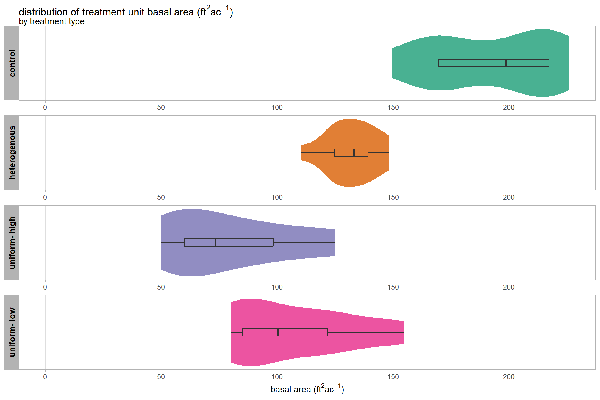
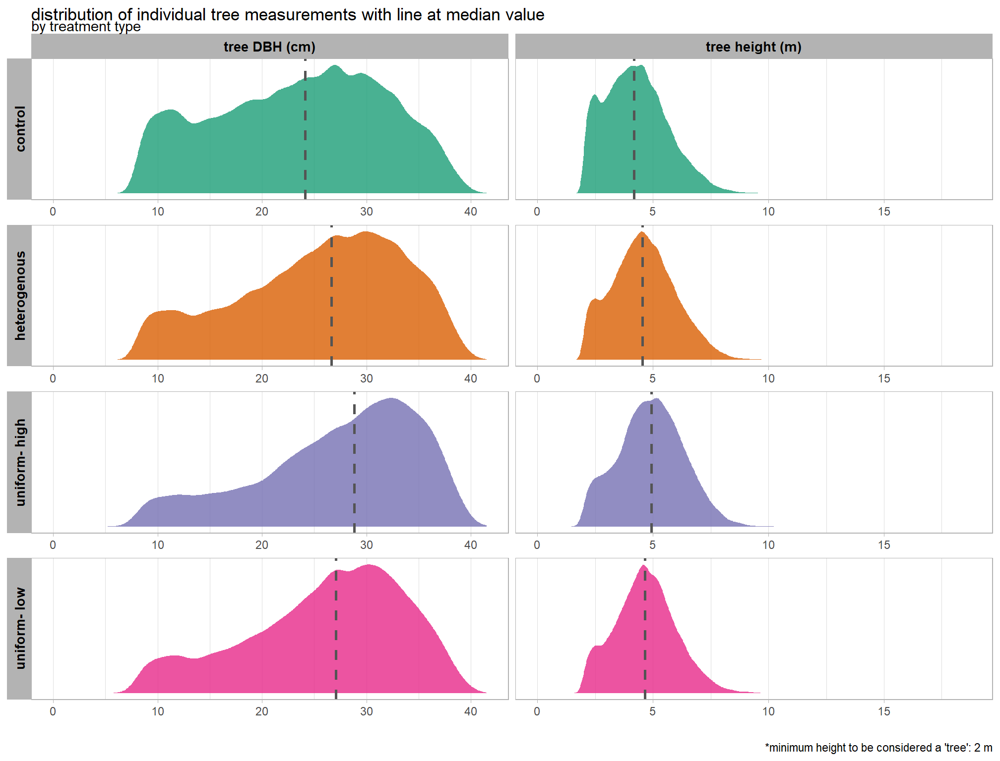
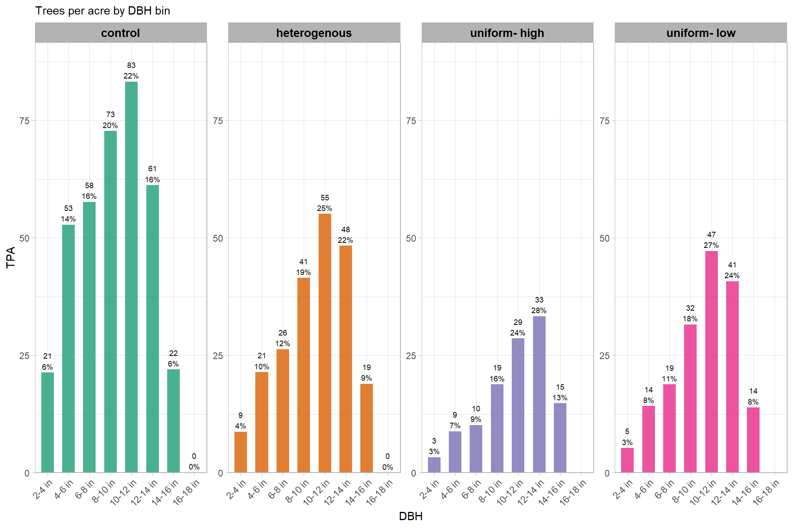
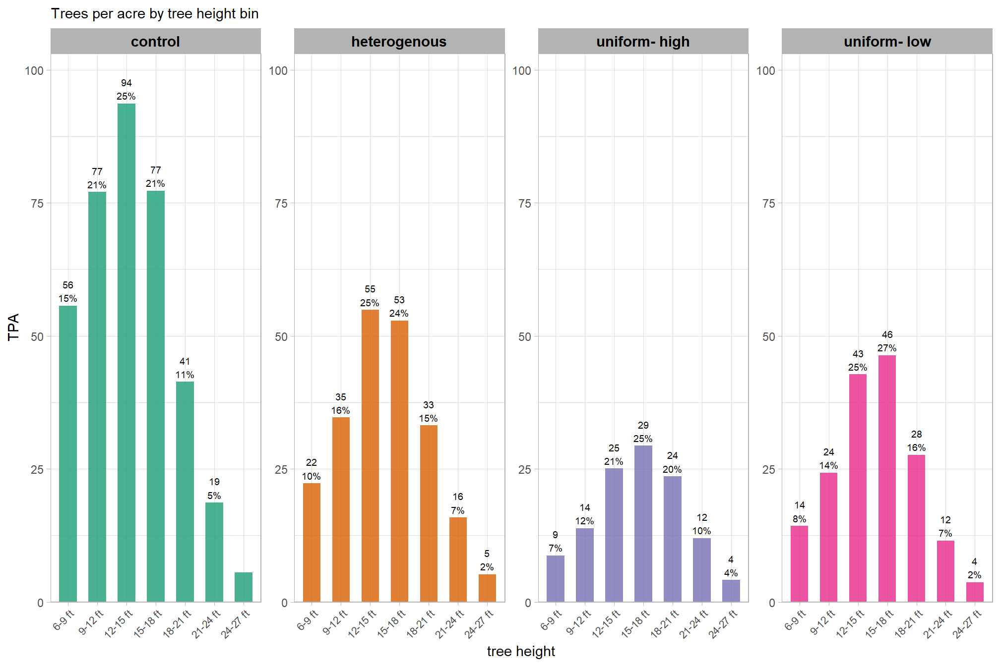

Section 4 Treatment Unit Silvicultural Summary
In this section, we’re going to aggregate the detected trees by treatment unit to produce silvicultural summaries. Before we do that, we’ll use pile predictions as a mask to remove smaller, detected “trees” that are actually piles or downed trees/debris so that we are only working with trees within units.
4.1 Remove Slash Piles
read back in the tree point data and attach to treatment units
treetops_sf <- sf::st_read(dsn = treetops_fnm, quiet = TRUE)
# attach to treatment unit
treetops_sf <- treetops_sf %>%
dplyr::inner_join(
treetops_sf %>%
sf::st_transform(sf::st_crs(stand_boundary)) %>%
sf::st_intersection(
stand_boundary %>%
dplyr::select(unit,block,tretmnt,unit_area_ha) %>%
dplyr::rename(type = tretmnt) %>%
dplyr::mutate(
type =
tolower(type) %>%
stringr::str_squish()
) %>%
dplyr::rename_with(.fn = ~paste0("trtmnt_", .x, recycle0 = T))
) %>%
sf::st_drop_geometry() %>%
dplyr::select(treeID, tidyselect::starts_with("trtmnt_"))
, by = "treeID"
) %>%
dplyr::mutate(
is_in_trtmnt_unit = ifelse(is.na(trtmnt_type) | trtmnt_type=="control",F,T)
, dplyr::across(c(trtmnt_type,trtmnt_block,trtmnt_unit),ordered)
)
# treetops_sf %>% dplyr::glimpse()use our slash pile mask to remove detected “trees” that are likely not trees. if a tree top point falls within the boundary of a detected pile footprint, it will be removed
# save nrow
nrow_temp <- nrow(treetops_sf)
treetops_sf <-
sf::st_filter(
treetops_sf
, piles_workflow_ans %>%
dplyr::filter(is_in_trtmnt_unit, inrange_th_votes>=5) %>%
sf::st_union()
, .predicate = sf::st_disjoint
)what proportion of “trees” were removed?
# nrow_temp
# nrow(treetops_sf)
scales::percent((nrow_temp-nrow(treetops_sf))/nrow_temp, accuracy = 0.1)## [1] "2.7%"nice. now we’ll keep only trees that are at least 2 m in height since we included trees as small as 1.37 m in our tree detection
using our cleaned trees data, how many trees per treatment unit?
treetops_sf %>%
sf::st_drop_geometry() %>%
dplyr::count(trtmnt_type, trtmnt_block, trtmnt_unit,trtmnt_unit_area_ha) %>%
dplyr::mutate(
trees_per_ha = n/trtmnt_unit_area_ha
, trtmnt_unit_area_ha = scales::comma(trtmnt_unit_area_ha,accuracy=0.1)
, n = scales::comma(n,accuracy=1)
, trees_per_ha = scales::comma(trees_per_ha,accuracy=0.1)
) %>%
kableExtra::kbl(
caption = "count trees by treatment unit"
, col.names = c(
"type","block","unit","ha"
, "# trees", "trees ha<sup>-1</sup>"
)
, escape = F
# , digits = 2
) %>%
kableExtra::kable_styling(font_size = 9.7) %>%
kableExtra::column_spec(seq(4,6,by=2), border_right = TRUE, include_thead = TRUE) %>%
kableExtra::collapse_rows(columns = 1, valign = "top") %>%
kableExtra::scroll_box(height = "8.4in")| type | block | unit | ha | # trees | trees ha-1 |
|---|---|---|---|---|---|
| control | 1 | U11 | 11.5 | 9,614 | 832.4 |
| 2 | U23 | 10.3 | 10,443 | 1,013.1 | |
| 3 | U21 | 8.1 | 8,410 | 1,039.4 | |
| 4 | U4 | 6.7 | 6,417 | 958.8 | |
| 5 | U38 | 8.6 | 7,030 | 817.8 | |
| 6 | U30 | 10.1 | 10,692 | 1,055.2 | |
| 7 | U46 | 8.6 | 7,783 | 910.0 | |
| 8 | U31 | 8.1 | 7,378 | 912.4 | |
| 9 | U54 | 10.3 | 8,839 | 854.1 | |
| 10 | U42 | 8.3 | 6,306 | 755.6 | |
| 11 | U48 | 8.3 | 6,534 | 789.5 | |
| 12 | U34 | 9.2 | 9,752 | 1,055.5 | |
| heterogenous | 1 | U40 | 9.1 | 4,623 | 506.8 |
| 2 | U16 | 9.5 | 5,576 | 586.6 | |
| 3 | U26 | 9.0 | 4,586 | 511.3 | |
| 4 | U36 | 8.5 | 4,014 | 472.0 | |
| 5 | U39 | 8.3 | 4,108 | 494.3 | |
| 6 | U29 | 9.2 | 5,487 | 598.2 | |
| 7 | U44 | 8.6 | 4,792 | 556.9 | |
| 8 | U2 | 8.3 | 4,327 | 522.2 | |
| 9 | U53 | 8.4 | 4,835 | 573.0 | |
| 10 | U41 | 8.2 | 4,475 | 545.7 | |
| 11 | U43 | 8.1 | 4,481 | 550.9 | |
| 12 | U55 | 9.2 | 5,556 | 603.6 | |
| uniform- high | 1 | U10 | 5.2 | 1,877 | 362.7 |
| 2 | U19 | 4.5 | 1,339 | 298.1 | |
| 3 | U18 | 4.1 | 1,072 | 261.0 | |
| 4 | U27 | 4.2 | 1,746 | 419.3 | |
| 5 | U37 | 5.6 | 1,576 | 280.3 | |
| 6 | U28 | 4.3 | 999 | 232.8 | |
| 7 | U45 | 4.3 | 981 | 228.3 | |
| 8 | U33 | 4.5 | 863 | 192.4 | |
| 9 | U52 | 4.1 | 1,606 | 391.6 | |
| 10 | U35 | 4.4 | 1,036 | 233.5 | |
| 11 | U49 | 4.4 | 1,828 | 416.2 | |
| 12 | U32 | 5.1 | 978 | 193.6 | |
| uniform- low | 1 | U10 | 5.2 | 1,888 | 364.8 |
| 2 | U19 | 4.5 | 2,458 | 547.2 | |
| 3 | U18 | 4.1 | 1,521 | 370.4 | |
| 4 | U27 | 4.2 | 1,921 | 461.3 | |
| 5 | U37 | 5.6 | 2,009 | 357.3 | |
| 6 | U28 | 4.3 | 1,784 | 415.7 | |
| 7 | U45 | 4.3 | 1,228 | 285.8 | |
| 8 | U33 | 4.5 | 1,630 | 363.4 | |
| 9 | U52 | 4.1 | 2,056 | 501.4 | |
| 10 | U35 | 4.4 | 2,033 | 458.3 | |
| 11 | U49 | 4.4 | 2,472 | 562.9 | |
| 12 | U32 | 5.1 | 2,176 | 430.8 |
where are these units in space?
ggplot2::ggplot(
data = stand_boundary
, ggplot2::aes(color = ordered(block), fill = ordered(tolower(tretmnt)))
)+
ggplot2::geom_sf(lwd = 2, alpha = 0.8) +
ggplot2::scale_fill_brewer(palette = "Dark2") +
# ggplot2::scale_color_viridis_d(option = "turbo") +
ggplot2::scale_color_manual(
values = viridis::turbo(n = length(unique(stand_boundary$block))) %>% sample()
) +
ggplot2::labs(fill = "treatment\ntype", color = "treatment\nblock") +
ggplot2::theme_void() +
ggplot2::guides(
fill = ggplot2::guide_legend(
override.aes = list(
color = NA, shape = 15, linetype = 0, size = 6, alpha = 1
)
)
, color = ggplot2::guide_legend(
override.aes = list(
fill = NA, shape = 15, size = 6, alpha = 1
)
)
)
4.2 Function to Calculate Silviclutural Metrics
let’s make a function to summarize the data and create common silvicultural metrics within our stand boundary
###################################################################################
# define a function to convert columns in data frame from metric to imperial
# see:
# https://www.forestnb.com/archives/forest-nb-news/resources/conversions/
# https://www.ars.usda.gov/is/np/agbyproducts/agbyappendix.pdf
###################################################################################
calc_imperial_units_fn <- function(df) {
df %>%
# convert to imperial units
dplyr::mutate(
dplyr::across(
.cols = tidyselect::ends_with("_cm")
, ~ .x * 0.394
, .names = "{.col}_in"
)
, dplyr::across(
.cols = tidyselect::ends_with("_m")
, ~ .x * 3.281
, .names = "{.col}_ft"
)
, dplyr::across(
.cols = tidyselect::ends_with("_m2_per_ha")
, ~ .x * 4.359
, .names = "{.col}_ftac"
)
, dplyr::across(
.cols = tidyselect::ends_with("_kg_per_ha")
, ~ .x * 0.892178
, .names = "{.col}_lbsac"
)
, dplyr::across(
.cols = tidyselect::ends_with("_per_ha") &
!tidyselect::ends_with("_m2_per_ha") &
!tidyselect::ends_with("_kg_per_ha")
, ~ .x * 0.405
, .names = "{.col}_ac"
)
, dplyr::across(
.cols = tidyselect::ends_with("_area_ha")
, ~ .x * 2.471
, .names = "{.col}_ac"
)
, dplyr::across(
.cols = tidyselect::ends_with("kg_per_m2")
, ~ .x * 0.20482
, .names = "{.col}_lbsft2"
)
, dplyr::across(
.cols = tidyselect::ends_with("kg_per_m3")
, ~ .x * 0.0624
, .names = "{.col}_lbsft3"
)
, dplyr::across(
.cols = tidyselect::ends_with("_m2") & !tidyselect::ends_with("per_m2")
, ~ .x * 10.764
, .names = "{.col}_ft2"
)
) %>%
dplyr::rename_with(
.fn = function(x){dplyr::case_when(
stringr::str_ends(x,"_cm_in") ~ stringr::str_replace(x,"_cm_in","_in")
, stringr::str_ends(x,"_m_ft") ~ stringr::str_replace(x,"_m_ft","_ft")
, stringr::str_ends(x,"_m2_per_ha_ftac") ~ stringr::str_replace(x,"_m2_per_ha_ftac","_ft2_per_ac")
, stringr::str_ends(x,"_kg_per_ha_lbsac") ~ stringr::str_replace(x,"_kg_per_ha_lbsac","_lbs_per_ac")
, stringr::str_ends(x,"_per_ha_ac") ~ stringr::str_replace(x,"_per_ha_ac","_per_ac")
, stringr::str_ends(x,"_area_ha_ac") ~ stringr::str_replace(x,"_area_ha_ac","_area_ac")
, stringr::str_ends(x,"_kg_per_m2_lbsft2") ~ stringr::str_replace(x,"_kg_per_m2_lbsft2","_lbs_per_ft2")
, stringr::str_ends(x,"_kg_per_m3_lbsft3") ~ stringr::str_replace(x,"_kg_per_m3_lbsft3","_lbs_per_ft3")
, stringr::str_ends(x,"_m2_ft2") ~ stringr::str_replace(x,"_m2_ft2","_ft2")
, TRUE ~ x
)}
)
}
###################################################################################
### stand-level summaries
###################################################################################
calc_silv_metrics <- function(tree_list, stand_area_ha = NULL, study_boundary = NULL, calc_imperial_units = F) {
# get study area
if(!is.null(study_boundary)){
# bounds check
if(
!inherits(study_boundary,"sf")
&& !inherits(study_boundary,"sfc")
){stop("study_boundary must be sf class object")}
if(is.na(sf::st_crs(study_boundary))){stop("study_boundary does not have a CRS")}
if(inherits(study_boundary,"sf") && nrow(study_boundary)!=1){
stop("study_boundary must only have a single record geometry")
}
if(inherits(study_boundary,"sfc") && length(study_boundary)!=1){
stop("study_boundary must only have a single record geometry")
}
if(
!all( sf::st_is(study_boundary, c("POLYGON","MULTIPOLYGON")) )
){
stop("study_boundary must contain POLYGON type geometry only")
}
# area
xxstand_area_ha <- study_boundary %>%
sf::st_area() %>%
as.numeric() %>%
`/`(10000)
}else if(is.numeric(stand_area_ha)){
xxstand_area_ha <- stand_area_ha[1]
}else{
stop("must provide `stand_area_ha` as numeric or `study_boundary` as sf object")
}
if(is.null(xxstand_area_ha) || is.na(xxstand_area_ha) || dplyr::coalesce(xxstand_area_ha,0)<=0){
stop("could not determine valid stand_area_ha")
}
# summarize tree list
if(!inherits(tree_list,"data.frame")){stop("tree_list must be data.frame class object")}
###### !!!!!!!!!!!!!!!!!!!!!!!!!!!!!!!!!!!!!!! NEED TO PUT IN CHECKS FOR COLUMNS USED
# see: cloud2trees::check_df_cols_all_missing()
if( !any(stringr::str_detect(names(tree_list), "landfire_crown_biomass_kg")) ){
tree_list <- tree_list %>% dplyr::mutate(landfire_crown_biomass_kg=as.numeric(NA))
}
if( !any(stringr::str_detect(names(tree_list), "cruz_crown_biomass_kg")) ){
tree_list <- tree_list %>% dplyr::mutate(cruz_crown_biomass_kg=as.numeric(NA))
}
if( !any(stringr::str_detect(names(tree_list), "landfire_tree_kg_per_m3")) ){
tree_list <- tree_list %>% dplyr::mutate(landfire_tree_kg_per_m3=as.numeric(NA))
}
if( !any(stringr::str_detect(names(tree_list), "cruz_tree_kg_per_m3")) ){
tree_list <- tree_list %>% dplyr::mutate(cruz_tree_kg_per_m3=as.numeric(NA))
}
# agg
agg <- tree_list %>%
sf::st_drop_geometry() %>%
dplyr::ungroup() %>%
dplyr::summarise(
n_trees = dplyr::n()
, mean_dbh_cm = mean(dbh_cm, na.rm = T)
, mean_tree_height_m = mean(tree_height_m, na.rm = T)
, mean_tree_cbh_m = mean(tree_cbh_m, na.rm = T)
, loreys_height_m = sum(basal_area_m2*tree_height_m, na.rm = T) / sum(basal_area_m2, na.rm = T)
, basal_area_m2 = sum(basal_area_m2, na.rm = T)
, sum_dbh_cm_sq = sum(dbh_cm^2, na.rm = T)
, landfire_crown_biomass_kg = sum(landfire_crown_biomass_kg, na.rm = F)
, cruz_crown_biomass_kg = sum(cruz_crown_biomass_kg, na.rm = F)
, mean_landfire_tree_kg_per_m3 = mean(landfire_tree_kg_per_m3, na.rm = T)
, mean_cruz_tree_kg_per_m3 = mean(cruz_tree_kg_per_m3, na.rm = T)
) %>%
dplyr::ungroup() %>%
dplyr::mutate(
stand_area_ha = xxstand_area_ha
, trees_per_ha = (n_trees/stand_area_ha)
, basal_area_m2_per_ha = (basal_area_m2/stand_area_ha)
, qmd_cm = sqrt(sum_dbh_cm_sq/n_trees)
, landfire_cfl_kg_per_m2 = landfire_crown_biomass_kg/(stand_area_ha*10000)
, cruz_cfl_kg_per_m2 = cruz_crown_biomass_kg/(stand_area_ha*10000)
) %>%
dplyr::select(-c(sum_dbh_cm_sq,landfire_crown_biomass_kg,cruz_crown_biomass_kg))
# imperial
if(calc_imperial_units){
agg <- calc_imperial_units_fn(agg)
}
return(agg)
}check out the data structure returned by the calc_silv_metrics() function
calc_silv_metrics(
tree_list = treetops_sf %>%
# just get one unit
dplyr::filter(
trtmnt_type==treetops_sf$trtmnt_type[1]
, trtmnt_block==treetops_sf$trtmnt_block[1]
, trtmnt_unit==treetops_sf$trtmnt_unit[1]
)
, stand_area_ha = treetops_sf$trtmnt_unit_area_ha[1]
, calc_imperial_units = T
) %>%
dplyr::glimpse()## Rows: 1
## Columns: 27
## $ n_trees <int> 10443
## $ mean_dbh_cm <dbl> 24.03183
## $ mean_tree_height_m <dbl> 4.395676
## $ mean_tree_cbh_m <dbl> 2.120214
## $ loreys_height_m <dbl> 5.319859
## $ basal_area_m2 <dbl> 534.4338
## $ mean_landfire_tree_kg_per_m3 <dbl> 0.6795806
## $ mean_cruz_tree_kg_per_m3 <dbl> 1.15825
## $ stand_area_ha <dbl> 10.30788
## $ trees_per_ha <dbl> 1013.108
## $ basal_area_m2_per_ha <dbl> 51.8471
## $ qmd_cm <dbl> 25.52639
## $ landfire_cfl_kg_per_m2 <dbl> 0.4942284
## $ cruz_cfl_kg_per_m2 <dbl> NA
## $ mean_dbh_in <dbl> 9.468542
## $ qmd_in <dbl> 10.0574
## $ mean_tree_height_ft <dbl> 14.42221
## $ mean_tree_cbh_ft <dbl> 6.956424
## $ loreys_height_ft <dbl> 17.45446
## $ basal_area_ft2_per_ac <dbl> 226.0015
## $ trees_per_ac <dbl> 410.3088
## $ stand_area_ac <dbl> 25.47078
## $ landfire_cfl_lbs_per_ft2 <dbl> 0.1012279
## $ cruz_cfl_lbs_per_ft2 <dbl> NA
## $ mean_landfire_tree_lbs_per_ft3 <dbl> 0.04240583
## $ mean_cruz_tree_lbs_per_ft3 <dbl> 0.07227478
## $ basal_area_ft2 <dbl> 5752.6454.3 Treatment Unit Summaries
let’s summarize the tree data by treatment unit
unit_sum_df <-
treetops_sf %>%
sf::st_drop_geometry() %>%
dplyr::distinct(trtmnt_type,trtmnt_block,trtmnt_unit,trtmnt_unit_area_ha)
unit_sum_df <-
1:nrow(unit_sum_df) %>%
purrr::map(function(x){
unit_temp <- unit_sum_df %>% dplyr::slice(x)
unit_temp %>%
dplyr::bind_cols(
calc_silv_metrics(
tree_list = treetops_sf %>%
# just get one unit
dplyr::inner_join(
unit_temp
, by = dplyr::join_by(trtmnt_type,trtmnt_block,trtmnt_unit)
)
, stand_area_ha = unit_temp$trtmnt_unit_area_ha
, calc_imperial_units = T
)
)
}) %>%
dplyr::bind_rows() %>%
dplyr::mutate(
my_fct = forcats::fct_cross(trtmnt_type,trtmnt_block,trtmnt_unit)
) %>%
dplyr::arrange(desc(trtmnt_type),trees_per_ha) %>%
dplyr::mutate(my_fct = forcats::fct_inorder(my_fct))
# unit_sum_df %>% dplyr::glimpse()4.3.1 Tabular
4.3.1.1 Metric units
unit_sum_df %>%
dplyr::arrange(trtmnt_type, trtmnt_block, trtmnt_unit) %>%
dplyr::select(
trtmnt_type, trtmnt_block, trtmnt_unit
, stand_area_ha
# different
, n_trees
, trees_per_ha
, mean_tree_height_m
, loreys_height_m
, mean_dbh_cm
, qmd_cm
, basal_area_m2_per_ha
, mean_landfire_tree_kg_per_m3
, mean_cruz_tree_kg_per_m3
) %>%
dplyr::mutate(
dplyr::across(c(n_trees), ~scales::comma(.x,accuracy=1))
, dplyr::across(
-c(tidyselect::starts_with("trtmnt_"),n_trees,tidyselect::ends_with("3"))
, ~scales::comma(.x,accuracy=0.1)
)
, dplyr::across(
tidyselect::ends_with("3")
, ~scales::comma(.x,accuracy=0.001)
)
) %>%
kableExtra::kbl(
caption = "Stand summary metrics in metric units"
, col.names = c(
"type","block","unit","ha"
, "trees"
, "trees ha<sup>-1</sup>"
, "mean<br>tree ht. (m)"
, "Lorey's<br>tree ht. (m)"
, "mean<br>DBH (cm)"
, "QMD (cm)"
, "BA (m<sup>2</sup> ha<sup>-1</sup>)"
, "mean<br>CBD (kg m<sup>-3</sup>)<br>LANDFIRE"
, "mean<br>CBD (kg m<sup>-3</sup>)<br>Cruz"
)
, escape = F
) %>%
kableExtra::kable_styling(font_size = 9.7) %>%
# kableExtra::column_spec(seq(4,10,by=2), border_right = TRUE, include_thead = TRUE) %>%
kableExtra::collapse_rows(columns = 1, valign = "top") %>%
kableExtra::scroll_box(height = "8.4in")| type | block | unit | ha | trees | trees ha-1 |
mean tree ht. (m) |
Lorey’s tree ht. (m) |
mean DBH (cm) |
QMD (cm) | BA (m2 ha-1) |
mean CBD (kg m-3) LANDFIRE |
mean CBD (kg m-3) Cruz |
|---|---|---|---|---|---|---|---|---|---|---|---|---|
| control | 1 | U11 | 11.5 | 9,614 | 832.4 | 4.2 | 4.9 | 23.0 | 24.2 | 38.4 | 0.664 | NA |
| 2 | U23 | 10.3 | 10,443 | 1,013.1 | 4.4 | 5.3 | 24.0 | 25.5 | 51.8 | 0.680 | 1.158 | |
| 3 | U21 | 8.1 | 8,410 | 1,039.4 | 4.2 | 4.9 | 23.5 | 24.7 | 49.9 | 0.508 | 0.982 | |
| 4 | U4 | 6.7 | 6,417 | 958.8 | 4.2 | 5.1 | 22.7 | 24.3 | 44.3 | 0.642 | 1.044 | |
| 5 | U38 | 8.6 | 7,030 | 817.8 | 4.2 | 5.0 | 23.3 | 24.5 | 38.6 | 0.423 | 0.626 | |
| 6 | U30 | 10.1 | 10,692 | 1,055.2 | 4.2 | 4.8 | 23.2 | 24.3 | 48.9 | 0.508 | NA | |
| 7 | U46 | 8.6 | 7,783 | 910.0 | 4.6 | 5.5 | 25.1 | 26.5 | 50.1 | 0.560 | NA | |
| 8 | U31 | 8.1 | 7,378 | 912.4 | 4.6 | 5.4 | 25.1 | 26.4 | 49.8 | 0.562 | NA | |
| 9 | U54 | 10.3 | 8,839 | 854.1 | 4.5 | 5.3 | 25.2 | 26.4 | 46.8 | 0.681 | NA | |
| 10 | U42 | 8.3 | 6,306 | 755.6 | 4.1 | 5.0 | 22.6 | 24.1 | 34.3 | 0.663 | NA | |
| 11 | U48 | 8.3 | 6,534 | 789.5 | 4.3 | 5.2 | 23.8 | 25.3 | 39.6 | 0.713 | NA | |
| 12 | U34 | 9.2 | 9,752 | 1,055.5 | 3.8 | 4.4 | 20.6 | 21.7 | 39.0 | 0.664 | NA | |
| heterogenous | 1 | U40 | 9.1 | 4,623 | 506.8 | 4.6 | 5.3 | 25.3 | 26.6 | 28.1 | 0.921 | NA |
| 2 | U16 | 9.5 | 5,576 | 586.6 | 4.7 | 5.5 | 25.9 | 27.2 | 34.0 | 0.981 | 1.054 | |
| 3 | U26 | 9.0 | 4,586 | 511.3 | 4.8 | 5.7 | 25.9 | 27.4 | 30.1 | 0.859 | 0.906 | |
| 4 | U36 | 8.5 | 4,014 | 472.0 | 4.5 | 5.3 | 24.9 | 26.1 | 25.3 | 0.764 | 0.787 | |
| 5 | U39 | 8.3 | 4,108 | 494.3 | 4.7 | 5.4 | 26.4 | 27.4 | 29.1 | 0.850 | 0.909 | |
| 6 | U29 | 9.2 | 5,487 | 598.2 | 4.5 | 5.1 | 25.1 | 26.1 | 32.1 | 0.777 | NA | |
| 7 | U44 | 8.6 | 4,792 | 556.9 | 4.4 | 5.0 | 24.5 | 25.6 | 28.6 | 0.965 | NA | |
| 8 | U2 | 8.3 | 4,327 | 522.2 | 4.8 | 5.5 | 26.4 | 27.5 | 30.9 | 0.964 | NA | |
| 9 | U53 | 8.4 | 4,835 | 573.0 | 4.3 | 5.0 | 24.1 | 25.2 | 28.6 | 1.015 | NA | |
| 10 | U41 | 8.2 | 4,475 | 545.7 | 4.9 | 5.6 | 26.9 | 28.1 | 33.8 | 0.874 | 0.699 | |
| 11 | U43 | 8.1 | 4,481 | 550.9 | 4.7 | 5.4 | 26.0 | 27.2 | 31.9 | 0.972 | NA | |
| 12 | U55 | 9.2 | 5,556 | 603.6 | 4.4 | 5.0 | 24.6 | 25.6 | 31.2 | 0.936 | NA | |
| uniform- high | 1 | U10 | 5.2 | 1,877 | 362.7 | 4.9 | 5.4 | 27.1 | 28.1 | 22.4 | 1.104 | NA |
| 2 | U19 | 4.5 | 1,339 | 298.1 | 4.9 | 5.6 | 26.7 | 28.0 | 18.4 | 0.990 | 1.166 | |
| 3 | U18 | 4.1 | 1,072 | 261.0 | 4.5 | 5.4 | 24.5 | 26.0 | 13.9 | 0.973 | 1.010 | |
| 4 | U27 | 4.2 | 1,746 | 419.3 | 5.2 | 5.8 | 28.6 | 29.5 | 28.7 | 1.166 | 1.072 | |
| 5 | U37 | 5.6 | 1,576 | 280.3 | 5.2 | 6.0 | 28.2 | 29.4 | 19.0 | 1.022 | 0.838 | |
| 6 | U28 | 4.3 | 999 | 232.8 | 4.9 | 5.5 | 27.1 | 28.1 | 14.5 | 1.046 | NA | |
| 7 | U45 | 4.3 | 981 | 228.3 | 5.1 | 5.8 | 28.2 | 29.3 | 15.4 | 0.955 | NA | |
| 8 | U33 | 4.5 | 863 | 192.4 | 4.8 | 5.3 | 26.8 | 27.6 | 11.5 | 1.076 | NA | |
| 9 | U52 | 4.1 | 1,606 | 391.6 | 4.7 | 5.2 | 26.4 | 27.3 | 22.9 | 1.238 | 1.123 | |
| 10 | U35 | 4.4 | 1,036 | 233.5 | 4.7 | 5.2 | 26.2 | 27.1 | 13.5 | 1.009 | 1.184 | |
| 11 | U49 | 4.4 | 1,828 | 416.2 | 5.2 | 5.7 | 28.7 | 29.6 | 28.6 | 1.179 | NA | |
| 12 | U32 | 5.1 | 978 | 193.6 | 4.7 | 5.4 | 26.4 | 27.4 | 11.4 | 1.090 | NA | |
| uniform- low | 1 | U10 | 5.2 | 1,888 | 364.8 | 4.4 | 5.0 | 24.8 | 25.8 | 19.1 | 1.011 | 0.973 |
| 2 | U19 | 4.5 | 2,458 | 547.2 | 4.9 | 5.6 | 26.9 | 28.1 | 33.9 | 1.105 | 1.330 | |
| 3 | U18 | 4.1 | 1,521 | 370.4 | 4.5 | 5.1 | 24.9 | 26.0 | 19.6 | 1.129 | 0.924 | |
| 4 | U27 | 4.2 | 1,921 | 461.3 | 4.8 | 5.5 | 26.8 | 27.9 | 28.2 | 1.089 | 1.100 | |
| 5 | U37 | 5.6 | 2,009 | 357.3 | 4.5 | 5.0 | 25.3 | 26.2 | 19.3 | 0.957 | 0.534 | |
| 6 | U28 | 4.3 | 1,784 | 415.7 | 4.7 | 5.3 | 26.2 | 27.2 | 24.2 | 1.118 | NA | |
| 7 | U45 | 4.3 | 1,228 | 285.8 | 5.0 | 5.7 | 27.6 | 28.6 | 18.4 | 1.110 | NA | |
| 8 | U33 | 4.5 | 1,630 | 363.4 | 4.5 | 5.1 | 25.5 | 26.4 | 19.9 | 1.057 | NA | |
| 9 | U52 | 4.1 | 2,056 | 501.4 | 4.6 | 5.1 | 25.7 | 26.6 | 27.8 | 1.282 | NA | |
| 10 | U35 | 4.4 | 2,033 | 458.3 | 4.8 | 5.5 | 26.6 | 27.8 | 27.8 | 1.021 | 1.392 | |
| 11 | U49 | 4.4 | 2,472 | 562.9 | 4.9 | 5.6 | 27.3 | 28.3 | 35.4 | 1.043 | NA | |
| 12 | U32 | 5.1 | 2,176 | 430.8 | 4.4 | 5.0 | 24.4 | 25.4 | 21.9 | 1.022 | NA |
4.3.1.2 Imperial units
unit_sum_df %>%
dplyr::arrange(trtmnt_type, trtmnt_block, trtmnt_unit) %>%
dplyr::select(
trtmnt_type, trtmnt_block, trtmnt_unit
, stand_area_ac
# different
, n_trees
, trees_per_ac
, mean_tree_height_ft
, loreys_height_ft
, mean_dbh_in
, qmd_in
, basal_area_ft2_per_ac
, mean_landfire_tree_lbs_per_ft3
, mean_cruz_tree_lbs_per_ft3
) %>%
dplyr::mutate(
dplyr::across(c(n_trees), ~scales::comma(.x,accuracy=1))
, dplyr::across(
-c(n_trees,tidyselect::starts_with("trtmnt_"),tidyselect::ends_with("3"))
, ~scales::comma(.x,accuracy=0.1)
)
, dplyr::across(
tidyselect::ends_with("3")
, ~scales::comma(.x,accuracy=0.001)
)
) %>%
kableExtra::kbl(
caption = "Stand summary metrics in imperial units"
, col.names = c(
"type","block","unit","ac"
, "trees"
, "trees ac<sup>-1</sup>"
, "mean<br>tree ht. (ft)"
, "Lorey's<br>tree ht. (ft)"
, "mean<br>DBH (in)"
, "QMD (in)"
, "BA (ft<sup>2</sup> ac<sup>-1</sup>)"
, "mean<br>CBD (lb ft<sup>-3</sup>)<br>LANDFIRE"
, "mean<br>CBD (lb ft<sup>-3</sup>)<br>Cruz"
)
, escape = F
) %>%
kableExtra::kable_styling(font_size = 9.7) %>%
# kableExtra::column_spec(seq(4,10,by=2), border_right = TRUE, include_thead = TRUE) %>%
kableExtra::collapse_rows(columns = 1, valign = "top") %>%
kableExtra::scroll_box(height = "8.4in")| type | block | unit | ac | trees | trees ac-1 |
mean tree ht. (ft) |
Lorey’s tree ht. (ft) |
mean DBH (in) |
QMD (in) | BA (ft2 ac-1) |
mean CBD (lb ft-3) LANDFIRE |
mean CBD (lb ft-3) Cruz |
|---|---|---|---|---|---|---|---|---|---|---|---|---|
| control | 1 | U11 | 28.5 | 9,614 | 337.1 | 13.6 | 16.1 | 9.0 | 9.5 | 167.3 | 0.041 | NA |
| 2 | U23 | 25.5 | 10,443 | 410.3 | 14.4 | 17.5 | 9.5 | 10.1 | 226.0 | 0.042 | 0.072 | |
| 3 | U21 | 20.0 | 8,410 | 420.9 | 13.9 | 16.2 | 9.3 | 9.7 | 217.4 | 0.032 | 0.061 | |
| 4 | U4 | 16.5 | 6,417 | 388.3 | 13.6 | 16.8 | 8.9 | 9.6 | 193.1 | 0.040 | 0.065 | |
| 5 | U38 | 21.2 | 7,030 | 331.2 | 13.8 | 16.3 | 9.2 | 9.7 | 168.4 | 0.026 | 0.039 | |
| 6 | U30 | 25.0 | 10,692 | 427.4 | 13.7 | 15.8 | 9.1 | 9.6 | 213.1 | 0.032 | NA | |
| 7 | U46 | 21.1 | 7,783 | 368.5 | 15.0 | 17.9 | 9.9 | 10.4 | 218.5 | 0.035 | NA | |
| 8 | U31 | 20.0 | 7,378 | 369.5 | 15.0 | 17.7 | 9.9 | 10.4 | 217.1 | 0.035 | NA | |
| 9 | U54 | 25.6 | 8,839 | 345.9 | 14.9 | 17.3 | 9.9 | 10.4 | 204.2 | 0.042 | NA | |
| 10 | U42 | 20.6 | 6,306 | 306.0 | 13.5 | 16.3 | 8.9 | 9.5 | 149.7 | 0.041 | NA | |
| 11 | U48 | 20.5 | 6,534 | 319.7 | 14.2 | 17.1 | 9.4 | 10.0 | 172.8 | 0.045 | NA | |
| 12 | U34 | 22.8 | 9,752 | 427.5 | 12.3 | 14.4 | 8.1 | 8.5 | 170.0 | 0.041 | NA | |
| heterogenous | 1 | U40 | 22.5 | 4,623 | 205.3 | 15.0 | 17.5 | 10.0 | 10.5 | 122.6 | 0.058 | NA |
| 2 | U16 | 23.5 | 5,576 | 237.6 | 15.5 | 18.2 | 10.2 | 10.7 | 148.4 | 0.061 | 0.066 | |
| 3 | U26 | 22.2 | 4,586 | 207.1 | 15.6 | 18.7 | 10.2 | 10.8 | 131.3 | 0.054 | 0.057 | |
| 4 | U36 | 21.0 | 4,014 | 191.1 | 14.8 | 17.4 | 9.8 | 10.3 | 110.4 | 0.048 | 0.049 | |
| 5 | U39 | 20.5 | 4,108 | 200.2 | 15.5 | 17.6 | 10.4 | 10.8 | 127.0 | 0.053 | 0.057 | |
| 6 | U29 | 22.7 | 5,487 | 242.3 | 14.7 | 16.8 | 9.9 | 10.3 | 139.8 | 0.048 | NA | |
| 7 | U44 | 21.3 | 4,792 | 225.5 | 14.4 | 16.4 | 9.7 | 10.1 | 124.8 | 0.060 | NA | |
| 8 | U2 | 20.5 | 4,327 | 211.5 | 15.6 | 17.9 | 10.4 | 10.8 | 134.8 | 0.060 | NA | |
| 9 | U53 | 20.9 | 4,835 | 232.1 | 14.2 | 16.4 | 9.5 | 9.9 | 124.9 | 0.063 | NA | |
| 10 | U41 | 20.3 | 4,475 | 221.0 | 16.0 | 18.3 | 10.6 | 11.1 | 147.3 | 0.055 | 0.044 | |
| 11 | U43 | 20.1 | 4,481 | 223.1 | 15.4 | 17.7 | 10.2 | 10.7 | 139.1 | 0.061 | NA | |
| 12 | U55 | 22.7 | 5,556 | 244.4 | 14.4 | 16.4 | 9.7 | 10.1 | 135.8 | 0.058 | NA | |
| uniform- high | 1 | U10 | 12.8 | 1,877 | 146.9 | 15.9 | 17.8 | 10.7 | 11.1 | 97.7 | 0.069 | NA |
| 2 | U19 | 11.1 | 1,339 | 120.7 | 15.9 | 18.5 | 10.5 | 11.0 | 80.0 | 0.062 | 0.073 | |
| 3 | U18 | 10.1 | 1,072 | 105.7 | 14.7 | 17.9 | 9.6 | 10.3 | 60.5 | 0.061 | 0.063 | |
| 4 | U27 | 10.3 | 1,746 | 169.8 | 17.0 | 19.1 | 11.3 | 11.6 | 125.2 | 0.073 | 0.067 | |
| 5 | U37 | 13.9 | 1,576 | 113.5 | 17.1 | 19.7 | 11.1 | 11.6 | 82.7 | 0.064 | 0.052 | |
| 6 | U28 | 10.6 | 999 | 94.3 | 16.0 | 18.1 | 10.7 | 11.1 | 63.1 | 0.065 | NA | |
| 7 | U45 | 10.6 | 981 | 92.5 | 16.8 | 19.0 | 11.1 | 11.5 | 67.0 | 0.060 | NA | |
| 8 | U33 | 11.1 | 863 | 77.9 | 15.6 | 17.2 | 10.5 | 10.9 | 50.1 | 0.067 | NA | |
| 9 | U52 | 10.1 | 1,606 | 158.6 | 15.4 | 17.2 | 10.4 | 10.8 | 100.0 | 0.077 | 0.070 | |
| 10 | U35 | 11.0 | 1,036 | 94.6 | 15.3 | 17.1 | 10.3 | 10.7 | 58.8 | 0.063 | 0.074 | |
| 11 | U49 | 10.9 | 1,828 | 168.6 | 17.0 | 18.9 | 11.3 | 11.6 | 124.6 | 0.074 | NA | |
| 12 | U32 | 12.5 | 978 | 78.4 | 15.5 | 17.6 | 10.4 | 10.8 | 49.9 | 0.068 | NA | |
| uniform- low | 1 | U10 | 12.8 | 1,888 | 147.8 | 14.5 | 16.4 | 9.8 | 10.2 | 83.2 | 0.063 | 0.061 |
| 2 | U19 | 11.1 | 2,458 | 221.6 | 16.0 | 18.3 | 10.6 | 11.1 | 147.7 | 0.069 | 0.083 | |
| 3 | U18 | 10.1 | 1,521 | 150.0 | 14.6 | 16.7 | 9.8 | 10.2 | 85.5 | 0.070 | 0.058 | |
| 4 | U27 | 10.3 | 1,921 | 186.8 | 15.9 | 18.2 | 10.6 | 11.0 | 122.8 | 0.068 | 0.069 | |
| 5 | U37 | 13.9 | 2,009 | 144.7 | 14.7 | 16.4 | 10.0 | 10.3 | 84.1 | 0.060 | 0.033 | |
| 6 | U28 | 10.6 | 1,784 | 168.4 | 15.4 | 17.4 | 10.3 | 10.7 | 105.4 | 0.070 | NA | |
| 7 | U45 | 10.6 | 1,228 | 115.8 | 16.5 | 18.7 | 10.9 | 11.3 | 80.2 | 0.069 | NA | |
| 8 | U33 | 11.1 | 1,630 | 147.2 | 14.9 | 16.6 | 10.1 | 10.4 | 86.9 | 0.066 | NA | |
| 9 | U52 | 10.1 | 2,056 | 203.1 | 15.0 | 16.7 | 10.1 | 10.5 | 121.3 | 0.080 | NA | |
| 10 | U35 | 11.0 | 2,033 | 185.6 | 15.8 | 18.1 | 10.5 | 10.9 | 121.1 | 0.064 | 0.087 | |
| 11 | U49 | 10.9 | 2,472 | 228.0 | 16.2 | 18.5 | 10.7 | 11.2 | 154.5 | 0.065 | NA | |
| 12 | U32 | 12.5 | 2,176 | 174.5 | 14.3 | 16.2 | 9.6 | 10.0 | 95.3 | 0.064 | NA |
4.3.2 Visual
we’ll start with a simple bar plot to see if the aggregated trees per ha generally align with the treatment types
unit_sum_df %>%
ggplot2::ggplot(mapping = ggplot2::aes(x=trees_per_ha,y=my_fct,fill=trtmnt_type,group = trtmnt_type)) +
ggplot2::geom_col() +
ggplot2::scale_fill_brewer(palette = "Dark2") +
ggplot2::scale_x_continuous(labels = scales::comma) +
ggplot2::theme_light() +
ggplot2::labs(x = "trees per ha", y = "") +
ggplot2::theme(
legend.position = "none"
, axis.text.y = ggplot2::element_text(size = 7)
, axis.text.x = ggplot2::element_text(size = 8)
)
that’s looks about right, let’s check out a unit-level distribution of the TPH
# reusable function for plotting
plt_metric_dist_fn <- function(df, metric_name, metric_label = NA) {
if(any(is.na(metric_label))){metric_label <- metric_name}
tit <- paste(
"distribution of treatment unit"
,metric_label
) %>%
latex2exp::TeX()
df %>%
ggplot2::ggplot(mapping = ggplot2::aes(x=.data[[metric_name]],fill=trtmnt_type)) +
ggplot2::geom_density(mapping = ggplot2::aes(y=ggplot2::after_stat(scaled)), alpha = 0.8, color = NA) +
ggplot2::facet_grid(
rows = dplyr::vars(trtmnt_type)
, axes = "all"
, switch = "y"
) +
ggplot2::scale_fill_brewer(palette = "Dark2") +
ggplot2::scale_x_continuous(limits=c(0,NA),labels = scales::comma) +
ggplot2::scale_y_continuous(NULL,breaks=NULL) +
ggplot2::labs(
fill="",x=latex2exp::TeX(metric_label),y=""
, title = tit
, subtitle = "\nby treatment type"
) +
ggplot2::theme_light() +
ggplot2::theme(
legend.position = "none"
, strip.text = ggplot2::element_text(size = 10, color = "black", face = "bold")
, axis.text.x = ggplot2::element_text(size = 9)
, plot.subtitle = ggplot2::element_text(margin = ggplot2::margin(t = -20, unit = "pt"))
)
}
plt_metric_violin_fn <- function(df, metric_name, metric_label = NA) {
if(any(is.na(metric_label))){metric_label <- metric_name}
tit <- paste(
"distribution of treatment unit"
,metric_label
) %>%
latex2exp::TeX()
df %>%
ggplot2::ggplot(mapping = ggplot2::aes(x=.data[[metric_name]])) +
ggplot2::geom_violin(
mapping = ggplot2::aes(y = 0, fill=trtmnt_type)
, alpha = 0.8, color = NA
) +
ggplot2::geom_boxplot(width = 0.1, fill = NA, outliers = F) +
ggplot2::facet_grid(
rows = dplyr::vars(trtmnt_type)
, axes = "all"
, switch = "y"
) +
ggplot2::scale_fill_brewer(palette = "Dark2") +
ggplot2::scale_x_continuous(limits=c(0,NA),labels = scales::comma) +
ggplot2::scale_y_continuous(NULL,breaks=NULL) +
ggplot2::labs(
fill="",x=latex2exp::TeX(metric_label),y=""
, title = tit
, subtitle = "\nby treatment type"
) +
ggplot2::theme_light() +
ggplot2::theme(
legend.position = "none"
, strip.text = ggplot2::element_text(size = 10, color = "black", face = "bold")
, axis.text.x = ggplot2::element_text(size = 9)
, plot.subtitle = ggplot2::element_text(margin = ggplot2::margin(t = -20, unit = "pt"))
)
}
# plot it
plt_metric_violin_fn(unit_sum_df,"trees_per_ha",metric_label = "trees $ha^{-1}$")
since we also have imperial units let’s see TPA

we can also look at the QMD in cm

and QMD in inches

and basal area in square meters per hectare
plt_metric_violin_fn(unit_sum_df,"basal_area_m2_per_ha",metric_label = "basal area ($m^{2} ha^{-1}$)")
but also basal area in square feet per acre
plt_metric_violin_fn(unit_sum_df,"basal_area_ft2_per_ac",metric_label = "basal area ($ft^{2} ac^{-1}$)")
4.4 Tree Distribution by Treatment Type
distribution of individual tree height and DBH by treatment type (this groups all trees under the same treatment type together)
treetops_sf %>%
sf::st_drop_geometry() %>%
# dplyr::count(trtmnt_type, trtmnt_block)
dplyr::select(trtmnt_type, tree_height_m, dbh_cm) %>%
tidyr::pivot_longer(cols = -c(trtmnt_type)) %>%
dplyr::mutate(
name = dplyr::case_match(
name
, "tree_height_m" ~ "tree height (m)"
, "dbh_cm" ~ "tree DBH (cm)"
)
) %>%
ggplot2::ggplot(
mapping = ggplot2::aes(fill = trtmnt_type)
) +
ggplot2::geom_density(
mapping = ggplot2::aes(x = value,y=ggplot2::after_stat(scaled))
, alpha = 0.8, color = NA
) +
ggplot2::geom_vline(
data =
treetops_sf %>%
sf::st_drop_geometry() %>%
dplyr::group_by(trtmnt_type) %>%
dplyr::summarise(dplyr::across(
.cols = c(tree_height_m, dbh_cm)
, ~median(.x,na.rm=T)
)) %>%
tidyr::pivot_longer(cols = -c(trtmnt_type)) %>%
dplyr::mutate(
name = dplyr::case_match(
name
, "tree_height_m" ~ "tree height (m)"
, "dbh_cm" ~ "tree DBH (cm)"
)
)
, mapping = ggplot2::aes(xintercept = value)
, linetype = "dashed", lwd = 1, color = "gray33"
) +
ggplot2::facet_grid(
rows = dplyr::vars(trtmnt_type)
, cols = dplyr::vars(name)
# rows = dplyr::vars(trtmnt_block)
, axes = "all"
, switch = "y"
, scales = "free_x"
) +
ggplot2::scale_fill_brewer(palette = "Dark2") +
ggplot2::scale_x_continuous(limits=c(0,NA),labels = scales::comma) +
ggplot2::scale_y_continuous(NULL,breaks=NULL) +
ggplot2::labs(
fill=""
, x=""
,y=""
, title = "distribution of individual tree measurements with line at median value"
, subtitle = "\nby treatment type"
, caption = "*minimum height to be considered a 'tree': 2 m"
) +
ggplot2::theme_light() +
ggplot2::theme(
legend.position = "none"
, strip.text = ggplot2::element_text(size = 10, color = "black", face = "bold")
, axis.text.x = ggplot2::element_text(size = 9)
, plot.subtitle = ggplot2::element_text(margin = ggplot2::margin(t = -20, unit = "pt"))
)
and in imperial units
treetops_sf %>%
sf::st_drop_geometry() %>%
# dplyr::count(trtmnt_type, trtmnt_block)
dplyr::select(trtmnt_type, tree_height_m, dbh_cm) %>%
calc_imperial_units_fn() %>%
dplyr::select(-c(tree_height_m, dbh_cm)) %>%
tidyr::pivot_longer(cols = -c(trtmnt_type)) %>%
dplyr::mutate(
name = dplyr::case_match(
name
, "tree_height_ft" ~ "tree height (ft)"
, "dbh_in" ~ "tree DBH (in)"
)
) %>%
ggplot2::ggplot(
mapping = ggplot2::aes(fill = trtmnt_type)
) +
ggplot2::geom_density(
mapping = ggplot2::aes(x = value,y=ggplot2::after_stat(scaled))
, alpha = 0.8, color = NA
) +
ggplot2::geom_vline(
data =
treetops_sf %>%
sf::st_drop_geometry() %>%
dplyr::select(trtmnt_type, tree_height_m, dbh_cm) %>%
calc_imperial_units_fn() %>%
dplyr::select(-c(tree_height_m, dbh_cm)) %>%
dplyr::group_by(trtmnt_type) %>%
dplyr::summarise(dplyr::across(
.cols = c(tree_height_ft, dbh_in)
, ~median(.x,na.rm=T)
)) %>%
tidyr::pivot_longer(cols = -c(trtmnt_type)) %>%
dplyr::mutate(
name = dplyr::case_match(
name
, "tree_height_ft" ~ "tree height (ft)"
, "dbh_in" ~ "tree DBH (in)"
)
)
, mapping = ggplot2::aes(xintercept = value)
, linetype = "dashed", lwd = 1, color = "gray33"
) +
ggplot2::facet_grid(
rows = dplyr::vars(trtmnt_type)
, cols = dplyr::vars(name)
# rows = dplyr::vars(trtmnt_block)
, axes = "all"
, switch = "y"
, scales = "free_x"
) +
ggplot2::scale_fill_brewer(palette = "Dark2") +
ggplot2::scale_x_continuous(limits=c(0,NA),labels = scales::comma) +
ggplot2::scale_y_continuous(NULL,breaks=NULL) +
ggplot2::labs(
fill=""
, x=""
,y=""
, title = "distribution of individual tree measurements with line at median value"
, subtitle = "\nby treatment type"
, caption = "*minimum height to be considered a 'tree': 2 m"
) +
ggplot2::theme_light() +
ggplot2::theme(
legend.position = "none"
, strip.text = ggplot2::element_text(size = 10, color = "black", face = "bold")
, axis.text.x = ggplot2::element_text(size = 9)
, plot.subtitle = ggplot2::element_text(margin = ggplot2::margin(t = -20, unit = "pt"))
)
table it
tbl_df_temp <-
treetops_sf %>%
sf::st_drop_geometry() %>%
dplyr::select(-c(dbh_m,trtmnt_unit_area_ha, tidyselect::ends_with("_ft2"))) %>%
calc_imperial_units_fn() %>%
dplyr::select(
dplyr::any_of(c(tidyselect::starts_with("trtmnt_")))
, tidyselect::starts_with("dbh_")
| tidyselect::starts_with("tree_height_")
| tidyselect::starts_with("tree_cbh_")
) %>%
dplyr::group_by(
trtmnt_type # , trtmnt_block, trtmnt_unit,trtmnt_unit_area_ha
) %>%
dplyr::summarise(
dplyr::across(
dplyr::where(is.numeric)
, .fns = list(
mean = ~mean(.x,na.rm=T)
, sd = ~sd(.x,na.rm=T)
# , q10 = ~quantile(.x,na.rm=T,probs=0.1)
# , q50 = ~quantile(.x,na.rm=T,probs=0.5)
# , q90 = ~quantile(.x,na.rm=T,probs=0.9)
# , min = ~min(.x,na.rm=T)
# , max = ~max(.x,na.rm=T)
, range = ~paste0(
scales::comma(min(.x,na.rm=T), accuracy = 0.1)
,"-"
, scales::comma(max(.x,na.rm=T), accuracy = 0.1)
)
)
)
, n = dplyr::n()
) %>%
dplyr::ungroup()
# tbl_df_temp %>% dplyr::glimpse()summary statistics of selected tree metrics by treatment type
metric units
# table metric
tbl_df_temp %>%
dplyr::select(
-c(
tidyselect::contains("_in_")
, tidyselect::contains("_ft_")
, n
)
) %>%
dplyr::mutate(
dplyr::across(
dplyr::where(is.numeric)
, ~scales::comma(.x,accuracy=0.1)
)
) %>%
# ncol()
kableExtra::kbl(
caption = paste0(
"Summary statistics of individual tree measurements"
,"<br>"
, "by treatment type"
)
, col.names = c(
" "
, rep(c("Mean","Std Dev","Range"), times = 3)
)
, escape = F
) %>%
kableExtra::kable_styling(font_size = 11.5) %>%
kableExtra::add_header_above(
c(
" "=1
, "DBH (cm)" = 3
, "Height (m)" = 3
, "CBH (m)" = 3
)
, escape = F
) %>%
kableExtra::column_spec(seq(1,10,by=3), border_right = TRUE, include_thead = TRUE) %>%
kableExtra::column_spec(
column = 1:10
, extra_css = "font-size: 11px;"
, include_thead = T
) %>%
# kableExtra::scroll_box(width = "740px")
kableExtra::footnote(
general = "*minimum height to be considered a 'tree': 2 m"
# , number = c("Footnote 1; ", "Footnote 2; ")
# , alphabet = c("Footnote A; ", "Footnote B; ")
# , symbol = c("Footnote Symbol 1; ", "Footnote Symbol 2")
)| Mean | Std Dev | Range | Mean | Std Dev | Range | Mean | Std Dev | Range | |
|---|---|---|---|---|---|---|---|---|---|
| control | 23.5 | 8.1 | 8.0-41.5 | 4.3 | 1.3 | 2.0-18.8 | 2.0 | 0.3 | 1.5-7.5 |
| heterogenous | 25.5 | 7.8 | 8.0-41.4 | 4.6 | 1.4 | 2.0-11.8 | 2.1 | 0.4 | 1.5-7.5 |
| uniform- high | 27.2 | 7.7 | 8.0-40.5 | 4.9 | 1.4 | 2.0-10.1 | 2.2 | 0.4 | 1.5-5.5 |
| uniform- low | 26.0 | 7.5 | 8.0-40.6 | 4.7 | 1.3 | 2.0-10.2 | 2.1 | 0.4 | 1.5-6.5 |
| Note: | |||||||||
| *minimum height to be considered a ‘tree’: 2 m |
imperial units
# table metric
tbl_df_temp %>%
dplyr::select(
-c(
tidyselect::contains("_cm_")
, tidyselect::contains("_m_")
, n
)
) %>%
dplyr::mutate(
dplyr::across(
dplyr::where(is.numeric)
, ~scales::comma(.x,accuracy=0.1)
)
) %>%
# ncol()
kableExtra::kbl(
caption = paste0(
"Summary statistics of individual tree measurements"
,"<br>"
, "by treatment type"
)
, col.names = c(
" "
, rep(c("Mean","Std Dev","Range"), times = 3)
)
, escape = F
) %>%
kableExtra::kable_styling(font_size = 11.5) %>%
kableExtra::add_header_above(
c(
" "=1
, "DBH (in)" = 3
, "Height (ft)" = 3
, "CBH (ft)" = 3
)
, escape = F
) %>%
kableExtra::column_spec(seq(1,10,by=3), border_right = TRUE, include_thead = TRUE) %>%
kableExtra::column_spec(
column = 1:10
, extra_css = "font-size: 11px;"
, include_thead = T
) %>%
# kableExtra::scroll_box(width = "740px")
kableExtra::footnote(
general = "*minimum height to be considered a 'tree': 2 m"
# , number = c("Footnote 1; ", "Footnote 2; ")
# , alphabet = c("Footnote A; ", "Footnote B; ")
# , symbol = c("Footnote Symbol 1; ", "Footnote Symbol 2")
)| Mean | Std Dev | Range | Mean | Std Dev | Range | Mean | Std Dev | Range | |
|---|---|---|---|---|---|---|---|---|---|
| control | 9.2 | 3.2 | 3.2-16.4 | 14.0 | 4.4 | 6.6-61.6 | 6.6 | 1.1 | 4.9-24.6 |
| heterogenous | 10.0 | 3.1 | 3.2-16.3 | 15.1 | 4.5 | 6.6-38.8 | 6.8 | 1.2 | 4.9-24.6 |
| uniform- high | 10.7 | 3.0 | 3.2-16.0 | 16.1 | 4.6 | 6.6-33.2 | 7.1 | 1.3 | 4.9-18.0 |
| uniform- low | 10.2 | 2.9 | 3.2-16.0 | 15.3 | 4.3 | 6.6-33.4 | 6.9 | 1.2 | 4.9-21.3 |
| Note: | |||||||||
| *minimum height to be considered a ‘tree’: 2 m |
another common thing to look at are binned height/DBH distributions
we’ll start with DBH bins
# make ggplot2::cut_* bins pretty
make_bins_pretty <- function(bin_factor, suffix = "") {
# convert factor to character and remove brackets and parens
clean_labels <- bin_factor %>%
as.character() %>%
stringr::str_replace_all(c("\\[" = "", "\\(" = "", "\\]" = "", "\\)" = "")) %>%
stringr::str_replace(",", "-")
# suffix
if(stringr::str_squish(suffix) != "" && inherits(suffix,"character")){
clean_labels <- stringr::str_c(clean_labels, " ", suffix) %>% stringr::str_squish()
}
# reorder based on the original factor levels
forcats::fct_reorder(factor(clean_labels), as.numeric(bin_factor))
}
# plot
treetops_sf %>%
sf::st_drop_geometry() %>%
dplyr::select(trtmnt_type,dbh_cm) %>%
calc_imperial_units_fn() %>% # get dbh inches
# metric cuts/bins
dplyr::mutate(
dbh_in_bin = ggplot2::cut_width(dbh_in, width = 2, boundary = 0) %>%
make_bins_pretty(suffix = "in") # pretty that
) %>%
dplyr::count(trtmnt_type, dbh_in_bin) %>%
dplyr::ungroup() %>%
# area by type
dplyr::inner_join(
unit_sum_df %>%
dplyr::group_by(trtmnt_type) %>%
dplyr::summarise(trtmnt_unit_area_ha=sum(trtmnt_unit_area_ha,na.rm=T))
, by = "trtmnt_type"
) %>%
calc_imperial_units_fn() %>% # get acres
dplyr::group_by(trtmnt_type) %>%
dplyr::mutate(
pct = n/sum(n)
# , pct_lab = scales::percent(pct,accuracy=0.1)
, tpa = n/trtmnt_unit_area_ac
, tph = n/trtmnt_unit_area_ha
, lab = paste0(scales::comma(tpa,accuracy=1), "\n",scales::percent(pct,accuracy=1) )
) %>%
dplyr::ungroup() %>%
# dplyr::glimpse()
ggplot2::ggplot(
mapping = ggplot2::aes(y = tpa, x = dbh_in_bin)
) +
ggplot2::geom_col(
mapping = ggplot2::aes(fill = trtmnt_type)
, width = 0.6
, color = NA, alpha = 0.8
) +
ggplot2::geom_text(
mapping = ggplot2::aes(label = lab)
, color = "black", size = 2.5, vjust = -0.2
) +
ggplot2::scale_fill_brewer(palette = "Dark2") +
ggplot2::scale_x_discrete(drop = F) +
ggplot2::scale_y_continuous(
# breaks = seq(0,1,by=0.2)
labels = scales::comma
, expand = ggplot2::expansion(mult = c(0,0.1))
) +
ggplot2::facet_grid(
cols = dplyr::vars(trtmnt_type)
# , rows = dplyr::vars(trtmnt_block)
# , ncol = 2
, axes = "all"
# , switch = "y"
) +
ggplot2::labs(
x = "DBH", y = "TPA", fill = ""
, subtitle = "Trees per acre by DBH bin"
) +
ggplot2::theme_light() +
ggplot2::theme(
legend.position = "none"
, strip.text = ggplot2::element_text(size = 11, color = "black", face = "bold")
, axis.text.x = ggplot2::element_text(size = 9, angle = 45, hjust = 1, vjust = 1)
# , axis.text.x = ggplot2::element_text(size = 12)
# , axis.text.y = ggplot2::element_blank()
# , axis.ticks.y = ggplot2::element_blank()
)
and height bins
# plot
treetops_sf %>%
sf::st_drop_geometry() %>%
dplyr::select(trtmnt_type,tree_height_m) %>%
calc_imperial_units_fn() %>% # get ft
# metric cuts/bins
dplyr::mutate(
tree_height_ft_bin = ggplot2::cut_width(tree_height_ft, width = 3, boundary = 0) %>%
make_bins_pretty(suffix = "ft") # pretty that
) %>%
dplyr::count(trtmnt_type, tree_height_ft_bin) %>%
dplyr::ungroup() %>%
# area by type
dplyr::inner_join(
unit_sum_df %>%
dplyr::group_by(trtmnt_type) %>%
dplyr::summarise(trtmnt_unit_area_ha=sum(trtmnt_unit_area_ha,na.rm=T))
, by = "trtmnt_type"
) %>%
calc_imperial_units_fn() %>% # get acres
dplyr::group_by(trtmnt_type) %>%
dplyr::mutate(
pct = n/sum(n)
# , pct_lab = scales::percent(pct,accuracy=0.1)
, tpa = n/trtmnt_unit_area_ac
, tph = n/trtmnt_unit_area_ha
, lab = ifelse(
pct>0.02
, paste0(scales::comma(tpa,accuracy=1), "\n",scales::percent(pct,accuracy=1) )
, ""
)
) %>%
dplyr::ungroup() %>%
###### this makes sure the long tail isn't plotted :/
dplyr::group_by(trtmnt_type) %>%
dplyr::arrange(trtmnt_type,tree_height_ft_bin) %>%
dplyr::mutate(cum = cumsum(pct)) %>%
dplyr::group_by(tree_height_ft_bin) %>%
dplyr::filter(min(cum)<0.998) %>%
dplyr::ungroup() %>%
###### this makes sure the long tail isn't plotted :/
# dplyr::glimpse()
ggplot2::ggplot(
mapping = ggplot2::aes(y = tpa, x = tree_height_ft_bin)
) +
ggplot2::geom_col(
mapping = ggplot2::aes(fill = trtmnt_type)
, width = 0.6
, color = NA, alpha = 0.8
) +
ggplot2::geom_text(
mapping = ggplot2::aes(label = lab)
, color = "black", size = 2.5, vjust = -0.2
) +
ggplot2::scale_fill_brewer(palette = "Dark2") +
# ggplot2::scale_x_discrete(drop = F) +
ggplot2::scale_y_continuous(
# breaks = seq(0,1,by=0.2)
labels = scales::comma
, expand = ggplot2::expansion(mult = c(0,0.1))
) +
ggplot2::facet_grid(
cols = dplyr::vars(trtmnt_type)
# , rows = dplyr::vars(trtmnt_block)
# , ncol = 2
, axes = "all"
# , switch = "y"
) +
ggplot2::labs(
x = "tree height", y = "TPA", fill = ""
, subtitle = "Trees per acre by tree height bin"
) +
ggplot2::theme_light() +
ggplot2::theme(
legend.position = "none"
, strip.text = ggplot2::element_text(size = 11, color = "black", face = "bold")
, axis.text.x = ggplot2::element_text(size = 8, angle = 45, hjust = 1, vjust = 1)
# , axis.text.x = ggplot2::element_text(size = 12)
# , axis.text.y = ggplot2::element_blank()
# , axis.ticks.y = ggplot2::element_blank()
)